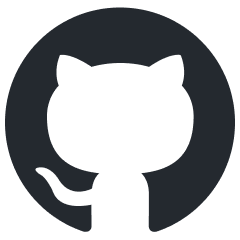

Yhteystiedot
rebecca.soisenniemi@outlook.com
linkedin.com/in/rebecca-soisenniemi-72607a2a3
linkedin.com/in/rebecca-soisenniemi-72607a2a3

github.com/suklaanenKoulutus
2023-2026 Tieto- ja viestintätekniikan insinööri (AMK), ohjelmistokehitys, OAMK
Esittely
Uskon olevani juuri se hiomaton timantti, jota IT-talossanne saatetaan kaivata.
Opiskelen ihan pian kolmatta vuotta ohjelmistokehittäjäksi. Monimuoto-opinnot mahdollistavat joustavan opiskelun ajasta ja paikasta riippumatta, ja olen edennyt opinnoissani loistavasti sekä nopeutetussa aikataulussa.
Opiskeluaikana olen osallistunut aktiivisesti eri projekteihin, joissa olen toiminut laaja-alaisesti eri rooleissa. Joissakin projekteissa olen ollut jopa kantava voima. Pyrin aina sujuvaan työntekoon ja noudatan hyviä Git-käytäntöjä, kuten feature-branchien käyttöä, sekä harjoittelen rebasen hallintaa.
Parhaillaan työstän omaksi ilokseni koirapuisto-sovellusta, joka auttaa käyttäjiä löytämään leikkiseuraa koirilleen paikallisista koirapuistoista. Lisäksi opintojeni päättyessä olen mukana perustamassa sivutoimista pelialan yritystä, jossa tavoitteemme on kehittää laadukkaita ja innostavia indie-pelejä.
Etsin aktiivisesti työpaikkaa, joka täyttäisi yhden seuraavista kriteereistä:
1) Fyysinen toimisto sijaitsee Tampereen tai Hämeenlinnan seudulla, tai
2) Työpaikka tarjoaa hybridi- tai etätyömahdollisuuksia.
Olen valmis työskentelemään osa- tai kokoaikaisesti ja haluan kehittyä vahvasti alan ammattilaisena. Olen valmis palvelemaan yritystä ja projekteja niiden tarpeiden mukaisesti, oli ohjelmointikieli tai teknologia mikä tahansa - kaiken voi oppia.
Kuvailisin olevani visuaalinen ja järjestelmällinen suunnittelija, mikä näkyy vahvana kykynäni organisoida ja dokumentoida projekteissa. Tiimityössä korostuvat lämminhenkinen ja auttavainen asenteeni sekä työmoraalini on vahva ja työssä olen huolellinen, vastuuntuntoinen ja kunnianhimoinen.
Koen kuitenkin tarvitsevani vielä harjoitusta teknisissä haasteissa, kuten tietorakenteiden toteuttamisessa ja ohjelmistokehityksen testausprosesseissa. Näitä ei ole käsitelty opinnoissani syvällisesti. Opetus on painottunut valmiiden kirjastojen käyttöön, mikä on jättänyt vähemmälle huomiolle teknisten perustaitojen ja kestävän ohjelmistoarkkitehtuurin rakentamisen. Tämä on osaltaan tehnyt pitkäikäisen ja hyvin suunnitellun koodin toteuttamisen haastavaksi. Haluan kehittyä erityisesti arkkitehtuurisessa ajattelussa ja teknisten perustaitojen hallinnassa.
Aloitan mielelläni tehtävistä, jotka sopivat juniorille ja joissa pääsen totuttautumaan alan käytäntöihin. Kiinnostuksen kohteitani ovat esimerkiksi peliala, tekoälyn kehittäminen ja käyttö sekä testiautomaatio. Toivon löytäväni merkityksellistä työtä ja projekteja, joissa voin kasvaa ja juurtua osaksi yritystä.
Kun löydän työpaikan, joka tukee kehittymistäni alan ammattilaisena, pääsee osaamiseni hioutumaan huippuunsa.
Opiskelen ihan pian kolmatta vuotta ohjelmistokehittäjäksi. Monimuoto-opinnot mahdollistavat joustavan opiskelun ajasta ja paikasta riippumatta, ja olen edennyt opinnoissani loistavasti sekä nopeutetussa aikataulussa.
Opiskeluaikana olen osallistunut aktiivisesti eri projekteihin, joissa olen toiminut laaja-alaisesti eri rooleissa. Joissakin projekteissa olen ollut jopa kantava voima. Pyrin aina sujuvaan työntekoon ja noudatan hyviä Git-käytäntöjä, kuten feature-branchien käyttöä, sekä harjoittelen rebasen hallintaa.
Parhaillaan työstän omaksi ilokseni koirapuisto-sovellusta, joka auttaa käyttäjiä löytämään leikkiseuraa koirilleen paikallisista koirapuistoista. Lisäksi opintojeni päättyessä olen mukana perustamassa sivutoimista pelialan yritystä, jossa tavoitteemme on kehittää laadukkaita ja innostavia indie-pelejä.
Etsin aktiivisesti työpaikkaa, joka täyttäisi yhden seuraavista kriteereistä:
1) Fyysinen toimisto sijaitsee Tampereen tai Hämeenlinnan seudulla, tai
2) Työpaikka tarjoaa hybridi- tai etätyömahdollisuuksia.
Olen valmis työskentelemään osa- tai kokoaikaisesti ja haluan kehittyä vahvasti alan ammattilaisena. Olen valmis palvelemaan yritystä ja projekteja niiden tarpeiden mukaisesti, oli ohjelmointikieli tai teknologia mikä tahansa - kaiken voi oppia.
Kuvailisin olevani visuaalinen ja järjestelmällinen suunnittelija, mikä näkyy vahvana kykynäni organisoida ja dokumentoida projekteissa. Tiimityössä korostuvat lämminhenkinen ja auttavainen asenteeni sekä työmoraalini on vahva ja työssä olen huolellinen, vastuuntuntoinen ja kunnianhimoinen.
Koen kuitenkin tarvitsevani vielä harjoitusta teknisissä haasteissa, kuten tietorakenteiden toteuttamisessa ja ohjelmistokehityksen testausprosesseissa. Näitä ei ole käsitelty opinnoissani syvällisesti. Opetus on painottunut valmiiden kirjastojen käyttöön, mikä on jättänyt vähemmälle huomiolle teknisten perustaitojen ja kestävän ohjelmistoarkkitehtuurin rakentamisen. Tämä on osaltaan tehnyt pitkäikäisen ja hyvin suunnitellun koodin toteuttamisen haastavaksi. Haluan kehittyä erityisesti arkkitehtuurisessa ajattelussa ja teknisten perustaitojen hallinnassa.
Aloitan mielelläni tehtävistä, jotka sopivat juniorille ja joissa pääsen totuttautumaan alan käytäntöihin. Kiinnostuksen kohteitani ovat esimerkiksi peliala, tekoälyn kehittäminen ja käyttö sekä testiautomaatio. Toivon löytäväni merkityksellistä työtä ja projekteja, joissa voin kasvaa ja juurtua osaksi yritystä.
Kun löydän työpaikan, joka tukee kehittymistäni alan ammattilaisena, pääsee osaamiseni hioutumaan huippuunsa.
Osaaminen
- Ohjelmointikielet
- C, C++, Java, Python, JavaScript
- Web-kehitys
- HTML, CSS, JavaScript, Bootstrap, Vue, React
- Mobiilikehitys
- Kotlin, React Native
- Ohjelmistokehykset
- Spring Boot, Node.js, Express.js, Qt Framework
- Kehitysympäristöt
- Visual Studio Code, Qt Creator, Android Studio
- Kehitys-/testaustyökalut
- Docker, Postman, Robot Framework, MySQL Workbench, pgAdmin
- Tietokannat
- PostgreSQL, MySql, Firestore
- Pilvipalvelut
- Firebase, Render, AWS, Azure
- Dokumentaatio
- Markdown, UML, ERD, SD
- Käyttöjärjestelmät
- Windows
- Versionhallinta
- Git, Github, Gitlab
- Microsoft Office
- Excel, Powerpoint, Word
- Video- ääni-, 3D- ja kuvaeditointi
- Corel, Magix, Audacity, Blender
- Pelikehitys
- Unreal Engine
- Projektinhallinta
- Kanban, Scrum, Agile